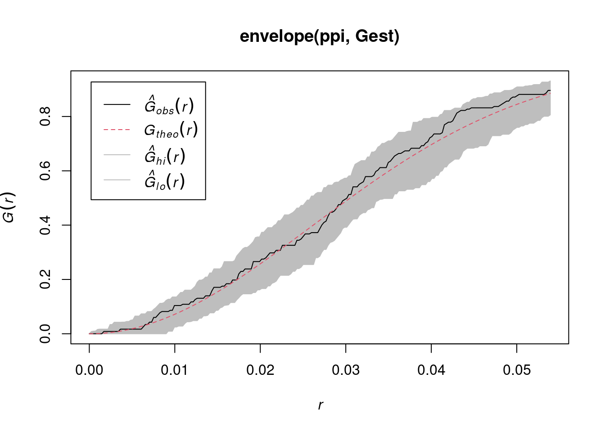
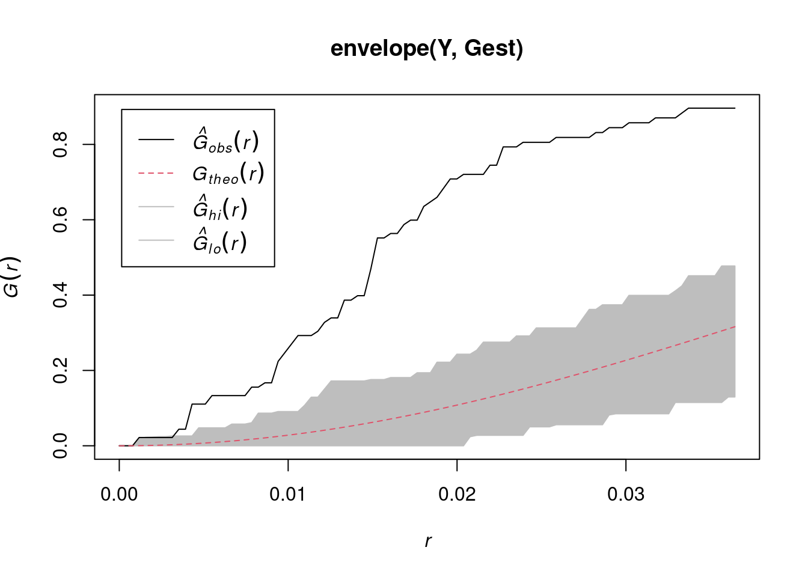
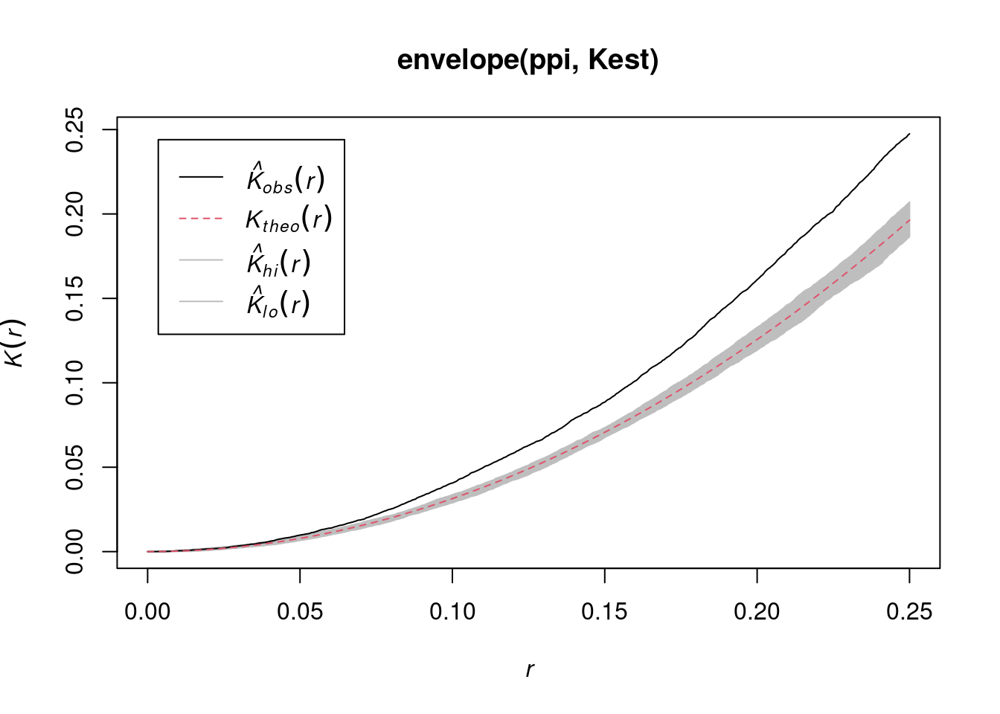
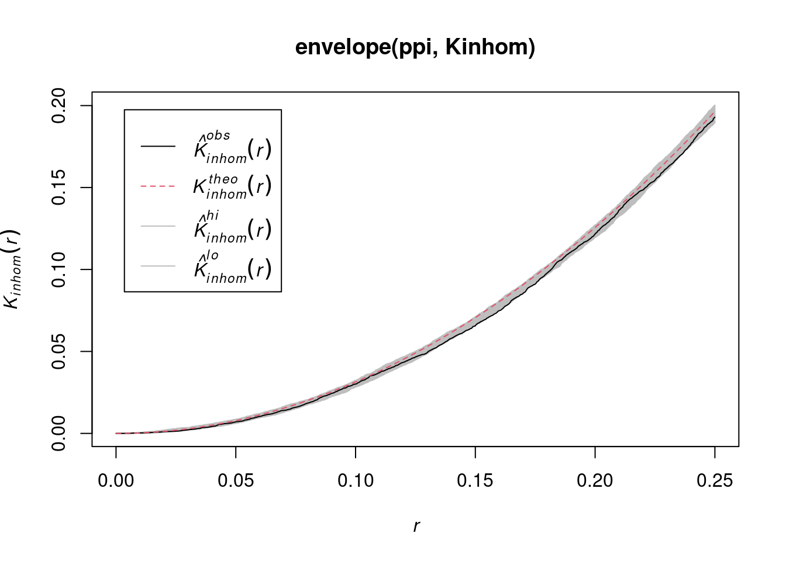
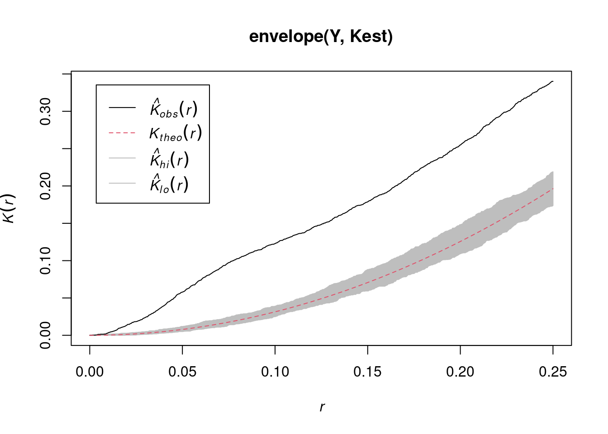
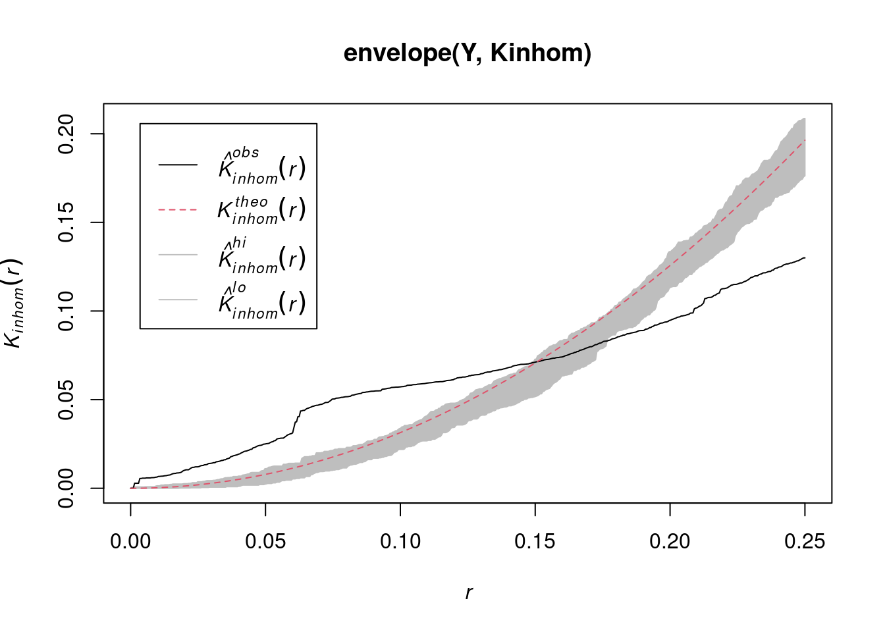

2 Point Pattern data
Learning goals
Reading materials
From Spatial Data Science: with applications in R:
- Chapter 11: Point Patterns
- Chapter 7:
sfandstars
Summary
- Intro to
sfandstars - Intro to
spatstat - Point patterns, density functions
- Interactions of point processes
- Simulating point process
- Modelling density as a function of external variables
2.1 Intro to sf and stars
- Briefly:
sfprovides classes and methods for simple features- a feature is a “thing”, with geometrical properties (point(s), line(s), polygon(s)) and attributes
-
sfstores data indata.frames with a list-column (of classsfc) that holds the geometries
the Simple Feature standard
“Simple Feature Access” is an open standard for data with vector geometries. It defines a set of classes for geometries and operations on them.
- “simple” refers to curves that are “simply” represented by points connected by straight lines
- connecting lines are not allowed to self-intersect
- polygons can have holes, and have validity constraints: holes cannot extrude the outer ring etc.
- All spatial software uses this: ArcGIS, QGIS, PostGIS, other spatial databases, …
Why do all functions in sf start with st_?
- see here
2.2 Intro to spatstat
Consider a point pattern that consist of
- a set of known coordinates
- an observation window
We can ask ourselves: our point pattern be a realisation of a completely spatially random (CRS) process? A CRS process has
- a spatially constant intensity (mean: first order property)
- completely independent locations (interactions: second order property)
e.g.
Code
library(spatstat)
# Loading required package: spatstat.data
# Loading required package: spatstat.geom
# spatstat.geom 3.2-9
# Loading required package: spatstat.random
# spatstat.random 3.2-3
# Loading required package: spatstat.explore
# Loading required package: nlme
# spatstat.explore 3.2-6
# Loading required package: spatstat.model
# Loading required package: rpart
# spatstat.model 3.2-10
# Loading required package: spatstat.linnet
# spatstat.linnet 3.1-4
#
# spatstat 3.0-7
# For an introduction to spatstat, type 'beginner'
set.seed(13431)
CRS = rpoispp(100)
plot(CRS)
Or does it have a non-constant intensity, but otherwise independent points:

Or does it have constant intensity, but dependent points:

or a combination:

2.3 Checking homogeneity
(q = quadrat.test(CRS))
# Warning: Some expected counts are small; chi^2 approximation may be
# inaccurate
#
# Chi-squared test of CSR using quadrat counts
#
# data: CRS
# X2 = 25, df = 24, p-value = 0.9
# alternative hypothesis: two.sided
#
# Quadrats: 5 by 5 grid of tiles
plot(q)
(q = quadrat.test(ppi))
#
# Chi-squared test of CSR using quadrat counts
#
# data: ppi
# X2 = 81, df = 24, p-value = 8e-08
# alternative hypothesis: two.sided
#
# Quadrats: 5 by 5 grid of tiles
plot(q)
2.4 Estimating density
- main parameter: bandwidth (
sigma): determines the amound of smoothing. - if
sigmais not specified: usesbw.diggle, an automatically tuned bandwidth
Correction for edge effect?


2.5 Assessing interactions: clustering/inhibition
The K-function (“Ripley’s K”) is the expected number of additional random (CRS) points within a distance r of a typical random point in the observation window.
The G-function (nearest neighbour distance distribution) is the cumulative distribution function G of the distance from a typical random point of X to the nearest other point of X.
envelope(CRS, Gest) |> plot()
# Generating 99 simulations of CSR ...
# 1, 2, 3, 4, 5, 6, 7, 8, 9, 10, 11, 12, 13, 14, 15, 16, 17,
# 18, 19, 20, 21, 22, 23, 24, 25, 26, 27, 28, 29, 30, 31, 32, 33, 34,
# 35, 36, 37, 38, 39, 40, 41, 42, 43, 44, 45, 46, 47, 48, 49, 50, 51,
# 52, 53, 54, 55, 56, 57, 58, 59, 60, 61, 62, 63, 64, 65, 66, 67, 68,
# 69, 70, 71, 72, 73, 74, 75, 76, 77, 78, 79, 80, 81, 82, 83, 84, 85,
# 86, 87, 88, 89, 90, 91, 92, 93, 94, 95, 96, 97, 98,
# 99.
#
# Done.
envelope(cl, Gest) |> plot()
# Generating 99 simulations of CSR ...
# 1, 2, 3, 4, 5, 6, 7, 8, 9, 10, 11, 12, 13, 14, 15, 16, 17,
# 18, 19, 20, 21, 22, 23, 24, 25, 26, 27, 28, 29, 30, 31, 32, 33, 34,
# 35, 36, 37, 38, 39, 40, 41, 42, 43, 44, 45, 46, 47, 48, 49, 50, 51,
# 52, 53, 54, 55, 56, 57, 58, 59, 60, 61, 62, 63, 64, 65, 66, 67, 68,
# 69, 70, 71, 72, 73, 74, 75, 76, 77, 78, 79, 80, 81, 82, 83, 84, 85,
# 86, 87, 88, 89, 90, 91, 92, 93, 94, 95, 96, 97, 98,
# 99.
#
# Done.envelope(hc, Gest) |> plot()
# Generating 99 simulations of CSR ...
# 1, 2, 3, 4, 5, 6, 7, 8, 9, 10, 11, 12, 13, 14, 15, 16, 17,
# 18, 19, 20, 21, 22, 23, 24, 25, 26, 27, 28, 29, 30, 31, 32, 33, 34,
# 35, 36, 37, 38, 39, 40, 41, 42, 43, 44, 45, 46, 47, 48, 49, 50, 51,
# 52, 53, 54, 55, 56, 57, 58, 59, 60, 61, 62, 63, 64, 65, 66, 67, 68,
# 69, 70, 71, 72, 73, 74, 75, 76, 77, 78, 79, 80, 81, 82, 83, 84, 85,
# 86, 87, 88, 89, 90, 91, 92, 93, 94, 95, 96, 97, 98,
# 99.
#
# Done.envelope(ppi, Gest) |> plot()
# Generating 99 simulations of CSR ...
# 1, 2, 3, 4, 5, 6, 7, 8, 9, 10, 11, 12, 13, 14, 15, 16, 17,
# 18, 19, 20, 21, 22, 23, 24, 25, 26, 27, 28, 29, 30, 31, 32, 33, 34,
# 35, 36, 37, 38, 39, 40, 41, 42, 43, 44, 45, 46, 47, 48, 49, 50, 51,
# 52, 53, 54, 55, 56, 57, 58, 59, 60, 61, 62, 63, 64, 65, 66, 67, 68,
# 69, 70, 71, 72, 73, 74, 75, 76, 77, 78, 79, 80, 81, 82, 83, 84, 85,
# 86, 87, 88, 89, 90, 91, 92, 93, 94, 95, 96, 97, 98,
# 99.
#
# Done.
envelope(Y , Gest) |> plot()
# Generating 99 simulations of CSR ...
# 1, 2, 3, 4, 5, 6, 7, 8, 9, 10, 11, 12, 13, 14, 15, 16, 17,
# 18, 19, 20, 21, 22, 23, 24, 25, 26, 27, 28, 29, 30, 31, 32, 33, 34,
# 35, 36, 37, 38, 39, 40, 41, 42, 43, 44, 45, 46, 47, 48, 49, 50, 51,
# 52, 53, 54, 55, 56, 57, 58, 59, 60, 61, 62, 63, 64, 65, 66, 67, 68,
# 69, 70, 71, 72, 73, 74, 75, 76, 77, 78, 79, 80, 81, 82, 83, 84, 85,
# 86, 87, 88, 89, 90, 91, 92, 93, 94, 95, 96, 97, 98,
# 99.
#
# Done.
envelope(ppi, Kest) |> plot()
# Generating 99 simulations of CSR ...
# 1, 2, 3, 4, 5, 6, 7, 8, 9, 10, 11, 12, 13, 14, 15, 16, 17,
# 18, 19, 20, 21, 22, 23, 24, 25, 26, 27, 28, 29, 30, 31, 32, 33, 34,
# 35, 36, 37, 38, 39, 40, 41, 42, 43, 44, 45, 46, 47, 48, 49, 50, 51,
# 52, 53, 54, 55, 56, 57, 58, 59, 60, 61, 62, 63, 64, 65, 66, 67, 68,
# 69, 70, 71, 72, 73, 74, 75, 76, 77, 78, 79, 80, 81, 82, 83, 84, 85,
# 86, 87, 88, 89, 90, 91, 92, 93, 94, 95, 96, 97, 98,
# 99.
#
# Done.
envelope(ppi, Kinhom) |> plot()
# Generating 99 simulations of CSR ...
# 1, 2, 3, 4, 5, 6, 7, 8, 9, 10, 11, 12, 13, 14, 15, 16, 17,
# 18, 19, 20, 21, 22, 23, 24, 25, 26, 27, 28, 29, 30, 31, 32, 33, 34,
# 35, 36, 37, 38, 39, 40, 41, 42, 43, 44, 45, 46, 47, 48, 49, 50, 51,
# 52, 53, 54, 55, 56, 57, 58, 59, 60, 61, 62, 63, 64, 65, 66, 67, 68,
# 69, 70, 71, 72, 73, 74, 75, 76, 77, 78, 79, 80, 81, 82, 83, 84, 85,
# 86, 87, 88, 89, 90, 91, 92, 93, 94, 95, 96, 97, 98,
# 99.
#
# Done.
envelope(Y , Kest) |> plot()
# Generating 99 simulations of CSR ...
# 1, 2, 3, 4, 5, 6, 7, 8, 9, 10, 11, 12, 13, 14, 15, 16, 17,
# 18, 19, 20, 21, 22, 23, 24, 25, 26, 27, 28, 29, 30, 31, 32, 33, 34,
# 35, 36, 37, 38, 39, 40, 41, 42, 43, 44, 45, 46, 47, 48, 49, 50, 51,
# 52, 53, 54, 55, 56, 57, 58, 59, 60, 61, 62, 63, 64, 65, 66, 67, 68,
# 69, 70, 71, 72, 73, 74, 75, 76, 77, 78, 79, 80, 81, 82, 83, 84, 85,
# 86, 87, 88, 89, 90, 91, 92, 93, 94, 95, 96, 97, 98,
# 99.
#
# Done.
envelope(Y , Kinhom) |> plot()
# Generating 99 simulations of CSR ...
# 1, 2, 3, 4, 5, 6, 7, 8, 9, 10, 11, 12, 13, 14, 15, 16, 17,
# 18, 19, 20, 21, 22, 23, 24, 25, 26, 27, 28, 29, 30, 31, 32, 33, 34,
# 35, 36, 37, 38, 39, 40, 41, 42, 43, 44, 45, 46, 47, 48, 49, 50, 51,
# 52, 53, 54, 55, 56, 57, 58, 59, 60, 61, 62, 63, 64, 65, 66, 67, 68,
# 69, 70, 71, 72, 73, 74, 75, 76, 77, 78, 79, 80, 81, 82, 83, 84, 85,
# 86, 87, 88, 89, 90, 91, 92, 93, 94, 95, 96, 97, 98,
# 99.
#
# Done.
2.6 Fitting models to clustered data
# assuming Inhomogeneous Poisson:
ppm(ppi, ~x)
# Nonstationary Poisson process
# Fitted to point pattern dataset 'ppi'
#
# Log intensity: ~x
#
# Fitted trend coefficients:
# (Intercept) x
# 4.33 1.96
#
# Estimate S.E. CI95.lo CI95.hi Ztest Zval
# (Intercept) 4.33 0.174 3.99 4.67 *** 24.91
# x 1.96 0.247 1.48 2.45 *** 7.96
# assuming Inhomogeneous clustered:
kppm(Y, ~x)
# Inhomogeneous cluster point process model
# Fitted to point pattern dataset 'Y'
# Fitted by minimum contrast
# Summary statistic: inhomogeneous K-function
#
# Log intensity: ~x
#
# Fitted trend coefficients:
# (Intercept) x
# 3.69 1.47
#
# Cluster model: Thomas process
# Fitted cluster parameters:
# kappa scale
# 7.731 0.038
# Mean cluster size: [pixel image]
#
# Cluster strength: phi = 7.122
# Sibling probability: psib = 0.8769
MaxEnt
It seems that MaxEnt fits an inhomogeneous Poisson process
Starting from presence (only) observations, it
- adds background (absence) points, uniformly in space
- fits logistic regression models to the 0/1 data, using environmental covariates
- ignores spatial interactions, spatial distances
- will be discussed on Day 4: Machine Learning methods applied to spatial data
A paper detailing the equivalence and differences between point pattern models and MaxEnt is found here.